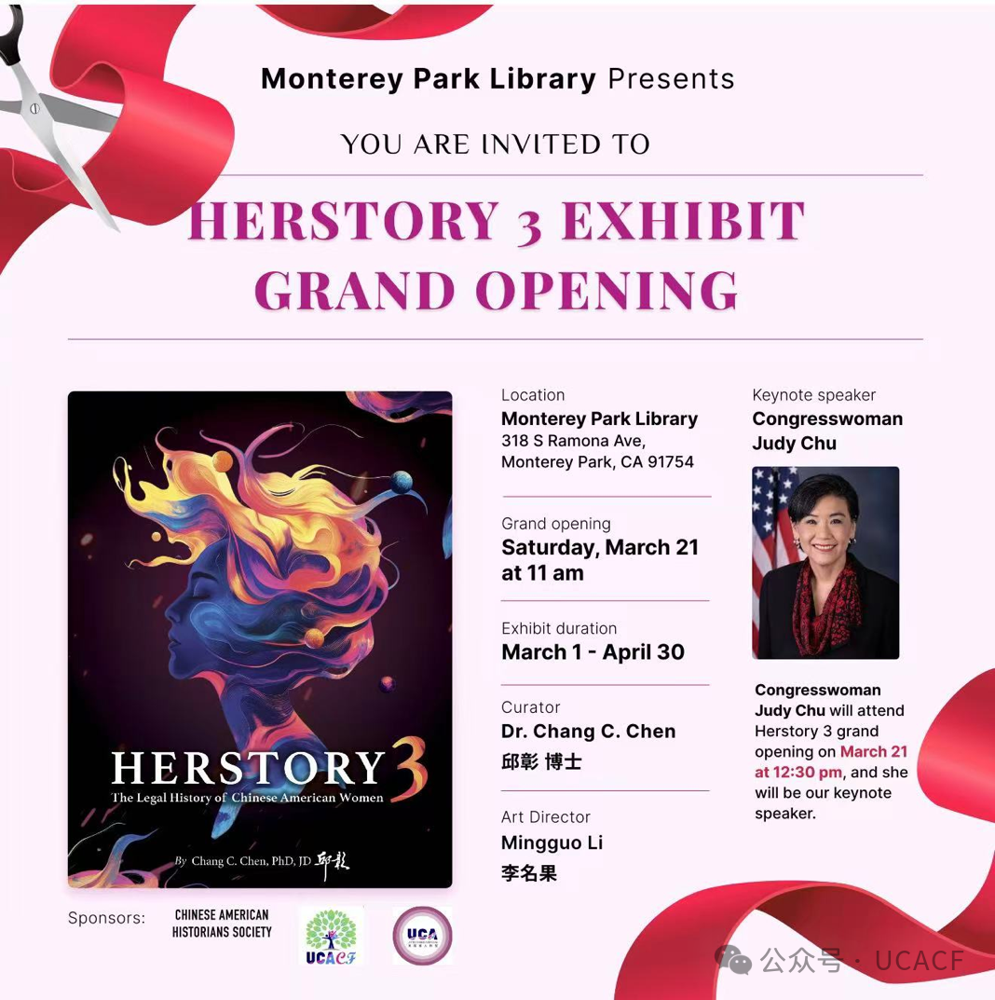
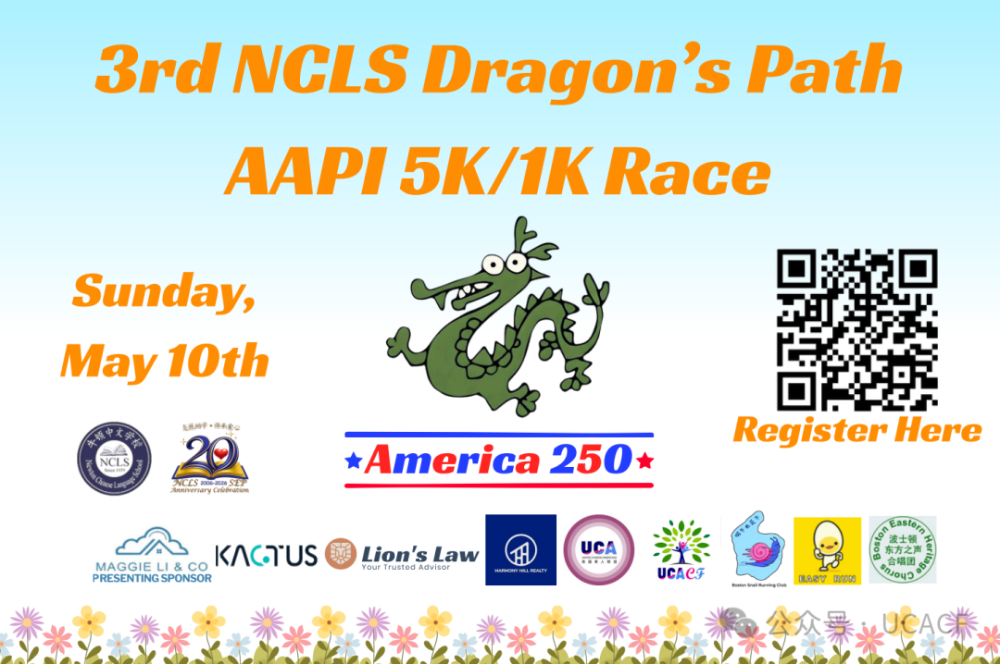
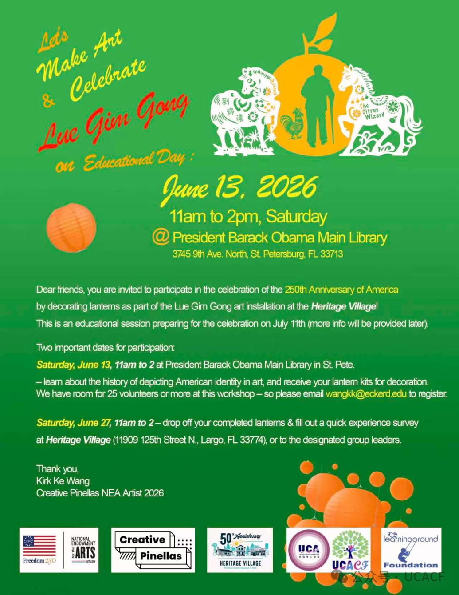
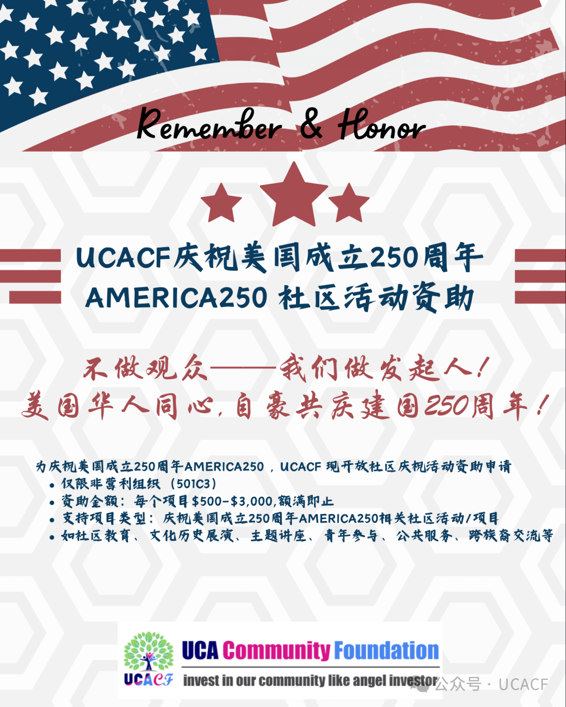

🔥 重磅活动回顾 | Major Events Recap
4月27日："华裔家长在美国的倡导"自闭症接纳月讲座 Autism Acceptance Month Lecture — Advocacy for Chinese American Parents in the U.S.
4月27日，Chinese American Association for Autistic Community（CAAEC）举办"美国华裔社区自闭症接纳月系列讲座"，UCACF参与支持。本场讲座邀请伊利诺伊大学芝加哥分校医学院临床助理教授许玥博士主讲，聚焦华裔家庭在特殊教育、医疗资源和学校沟通中的实际挑战，帮助家长更清楚地理解如何在美国体系中为孩子争取支持。
On April 27, the Chinese American Association for Autistic Community (CAAEC) hosted an Autism
Acceptance Month lecture supported by UCACF. Featuring Dr. Yue Xu, Clinical Assistant Professor at
the University of Illinois Chicago College of Medicine, the session focused on helping Chinese
American parents better navigate special education, healthcare resources, and school communication
so they can advocate more effectively for their children.
❄️ 社区亮点 | Community Spotlight
Herstory 3 展览：把华裔女性的法律历史带进公共空间 Bringing Chinese American Women's Legal History into Public View
今年春季，Monterey Park Library 举办 Herstory 3 Exhibit Grand Opening，展览时间为 3月1日至4月30日。该展览由 Dr.
Chang C. Chen（邱彰博士）策展，Mingguo Li（李名果）担任艺术总监，并获得Chinese American Historians
Society、UCA与 UCACF 支持。开幕活动邀请 Congresswoman Judy Chu 出席并发表主题演讲。
Herstory 3 以艺术、法律与历史相结合的方式，呈现华裔女性在美国社会中的经历与贡献。它不是一场普通展览，而是把长期被忽略的女性故事带到图书馆这样的公共空间，让更多社区成员能够看到、理解并讨论这段历史。
从移民、法律身份、女性权益到公共记忆，这个项目让"华裔美国史"不再只是书本里的内容，而成为社区可以亲身走近的故事。

This spring, Monterey Park Library presented the Herstory 3 Exhibit Grand Opening, with the
exhibition running from March 1 to April 30. The exhibit was curated by Dr. Chang C. Chen, with
Mingguo Li serving as Art Director, and was supported by the Chinese American Historians Society,
UCA, and UCACF. Congresswoman Judy Chu attended the opening and delivered the keynote address.
Herstory 3 combines art, law, and history to highlight the experiences and contributions of Chinese
American women. This was not just an exhibition—it brought overlooked stories into a public library,
making them visible and accessible to the broader community.
Through themes of immigration, legal identity, women's rights, and public memory, the project turned
Chinese American history into something the community could see, enter, and discuss.
❄️ 社区人物亮点 | Community Spotlight
UCACF Treasurer 刘瑞华博士入选2026年度"全美十大华人杰出青年" UCACF Treasurer Dr. Louise Ruihua Liu Named One of the 2026 Top Ten Outstanding Chinese American Youth
5月4日，由全美中华青年联合会（AACYF）主办的第十九届"全美十大华人杰出青年"评选结果在洛杉矶公布。UCACF Treasurer 刘瑞华博士（Dr. Louise Ruihua
Liu）入选年度榜单。
刘瑞华博士是 Hill Research 创始人兼CEO，毕业于中国科学院，并完成耶鲁大学博士后训练。她创立的 AI 临床数据平台 Hill
Research，将传统临床数据处理流程从数月压缩至约90分钟，推动人工智能在医疗数据与临床研究中的实际应用。
本届评选以"定义未来"为主题，表彰在科技、商业、公共服务和文化艺术等领域具有影响力的新一代华人青年。刘瑞华博士的入选，也展现了UCACF社区成员在科技创新与社会价值创造中的亮眼表现。
On May 4, the All-America Chinese Youth Federation (AACYF) announced the 19th annual Top Ten
Outstanding Chinese American Youth honorees in Los Angeles. Dr. Louise Ruihua Liu, Treasurer of
UCACF, was named one of the 2026 awardees.
Dr. Liu is the Founder and CEO of Hill Research. With training from the Chinese Academy of Sciences
and Yale, she founded an AI-powered clinical data platform that reduces traditional clinical data
processing from months to approximately 90 minutes.
This year's theme, "Defining the Future," recognizes young Chinese Americans making an impact across
technology, business, public service, and the arts. Dr. Liu's recognition highlights the leadership
and innovation emerging from within the UCACF community.
✅ 4月批准项目 | April Approved Grants
· World Taiji Science Federation (WTSF) – Tai Chi and Integrative Health Conference at Stanford
University
· CLTA-AZ – Chinese Cultural Heritage Speech & Writing Initiative
· Charlotte Chinese Story Time – The 2nd Charlotte Cup National Chinese Poetry Recitation
Contest
· Learning Ground Foundation, Inc – "GimGong Road" – An art project for the celebration of the 250th
anniversary of American Independence by honoring a Chinese American's legend
· Mandarin Future Foundation – Mandarin Moments Youth Media Initiative
· Asian American Youth Association – Chinese Enhancement
· Charlotte Chinese Story Time - Our American Story: Chinese American Family Voices in
Charlotte
· World Taiji Science Federation (WTSF) – 2026 UNESCO International Day of Taijiquan Celebration
· UCA AZ - Food of Love 2026-Serving Gratitude, One Box at a Time
· Chinatown History & Culture Association - 3rd Annual Cultural Festival in Chinatown
· Charlotte Chinese Story Time - 2026 Mid-Autumn Festival Cultural Fair Expansion Project
· The Philadelphia Melody Performing Arts Association (PMPAA), co-presented with Asian Youth Cultural
Association (AYCA) - AYCA Youth Arts Festival – America 250 Commemorative Edition
· Twin Cities West Metro Asian Fair - Twin Cities Asian Fair
· Tampa Bay Chinese School: Two Cultures, One Community: Celebrating America's 250th Anniversary
Through Cultural Engagement
· Philadelphia Asian American Film Foundation (PAAFF): PAAFF Spring Showcase
· Upper Dublin Chinese American Association (UDCA): Celebrating the United States 250th Anniversary
through Exploring Our Heritage and Stories
📅 接下来重点宣传 | What's Next: Key Promotions
5月10日：3rd NCLS Dragon's Path AAPI 公益跑5K/1K Race
New Chinese Language School（NCLS）将于 5月10日星期日举办第三届 Dragon's Path AAPI 5K/1K Race。活动结合 AAPI Heritage Month 与 America250 主题，通过5K/1K跑步活动，把学生、家庭、跑步社群与本地社区连接在一起。这场活动的重点不只是"跑步"，而是让更多家庭走出来，在公共空间中庆祝亚太裔文化、支持社区教育，并增强华裔社区在本地的可见度。活动现场也集合了多家社区伙伴、赞助方和支持机构，展现了教育、体育与社区参与之间的连接。

The New Chinese Language School (NCLS) will host the 3rd Dragon's Path AAPI 5K/1K Race on Sunday, May 10. The event connects students, families, runners, and community members through a race celebrating AAPI Heritage Month and the America250 initiative. This event is more than a run. It is a public celebration of AAPI culture, community education, and local visibility. With the support of community partners and sponsors, the race brings together education, wellness, and civic engagement in one shared space.
6月13日：Lue Gim Gong 艺术教育日 Lue Gim Gong Art & Educational Day
Creative Pinellas NEA Artist 2026 Kirk Ke Wang 将于 6月13日星期六上午11点至下午2点，在佛罗里达州圣彼得堡的
President Barack Obama Main Library 举办"Let's Make Art & Celebrate Lue Gim Gong on Educational
Day"。该项目获得 Creative Pinellas、Heritage Village、UCA、UCACF、Learningaround Foundation 等机构支持。
活动将带领参与者了解华裔农业先驱 Lue Gim Gong（吕锦堂）的故事，并通过灯笼装饰参与公共艺术创作。完成的灯笼将作为后续 Heritage
Village 展示于America250庆祝项目的一部分。

Creative Pinellas NEA Artist 2026 Kirk Ke Wang will host "Let's Make Art & Celebrate Lue Gim Gong on
Educational Day" on Saturday, June 13, from 11 AM to 2 PM at the President Barack Obama Main Library
in St. Petersburg, Florida. The project is supported by Creative Pinellas, Heritage Village, UCA,
UCACF, Learningaround Foundation, and other partners.
Participants will learn about Lue Gim Gong, a Chinese American agricultural pioneer, and decorate
lanterns as part of a public art installation. The completed lanterns will be included in a later
Heritage Village display connected to the America250 celebration.
🇺🇸 America250：让社区行动起来
2026年美国建国250周年，我们鼓励各地社区组织策划活动，共同讲述华人在美国历史与社会发展中的贡献。UCACF也将持续重点支持相关项目。
As the U.S. marks its 250th anniversary, we encourage local communities to organize meaningful
programs that highlight Chinese Americans' contributions to American history and society. UCACF will
continue to prioritize support for America250-related initiatives.

🎰 UCACF Impact Reception 即将在拉斯维加斯举行 | UCACF Impact Reception in Las Vegas
UCACF 将于2026年6月29日 4:00–6:00 PM 在 Caesars Palace, Las Vegas 举办UCACF Impact
Reception，邀请捐赠人、受助机构代表与社区领袖齐聚一堂，共同回顾UCACF项目成果，并展望未来发展方向。
活动将包括UCACF战略与基金申请指南更新、受助项目分享、交流与茶点时间。这不仅是一次感谢与连接的聚会，也将帮助更多合作伙伴了解UCACF如何通过一个个项目、一段段合作，持续支持全美华裔社区。
同时，欢迎嘉宾延长行程，参加6月28日至7月1日同样在 Caesars Palace 举办的2026 UCA Chinese American
Convention。大会将包括政府峰会、青年峰会、National Pickleball Tournament、舞台剧《Pearl
Buck》、北美中文书展、喜剧表演、Karaoke Showdown 以及社区组织展示等丰富项目。
RSVP截止日期：6月1日
大会注册链接：立即注册 Register Here
UCACF期待在拉斯维加斯与大家相聚，一起见证社区影响力的持续扩大。
UCACF will host its Impact Reception on June 29, 2026, from 4:00–6:00 PM at Caesars Palace, Las
Vegas, bringing together donors, grant recipients, and community leaders to celebrate shared progress
and look ahead.
The reception will feature UCACF strategy and grant guideline updates, presentations from grant
recipients, and networking with refreshments. It will be an opportunity to reconnect with partners,
hear real stories of community impact, and learn more about UCACF's future priorities.
Guests are also encouraged to join the 2026 UCA Chinese American Convention, held from June 28 to
July 1 at Caesars Palace. Convention highlights include the UCA Government Summit, UCA Youth Summit,
National Pickleball Tournament, the stage play Pearl Buck, the inaugural North American Chinese Book
Fair, stand-up comedy, Karaoke Showdown, and a community showcase.
RSVP by June 1.
Convention registration: Register Here
UCACF looks forward to gathering in Las Vegas and continuing to build stronger communities—one
project, one connection, and one partnership at a time.